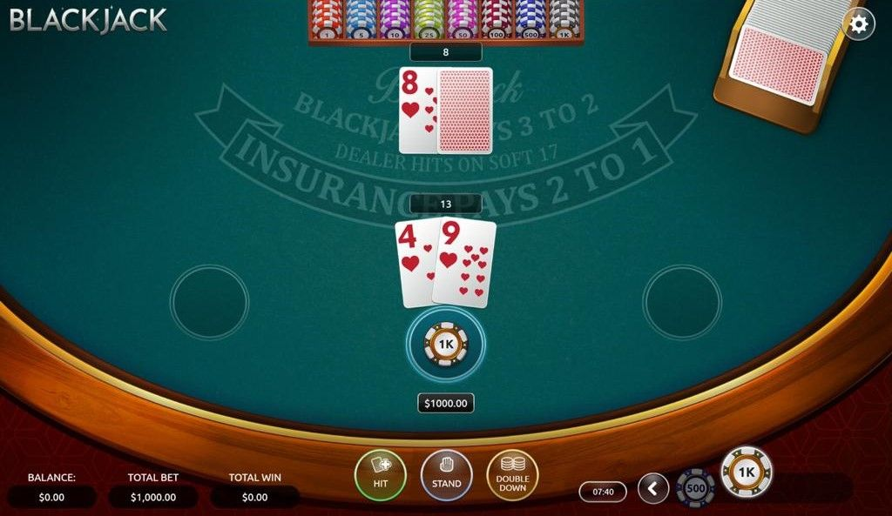

Black Jack Simulator
Un juego de Black Jack que te permite tanto jugar manualmente como sacar estadísticas personalizadas.
Las estadísticas pueden sacarse tanto con la estrategia básica como con el sistema de conteo de cartas HiLo.
Actualmente, la mayor parte de la lógica (el modelo) está finalizado. Quedan muchos tests por hacer y terminar de crear la UI gráfica.